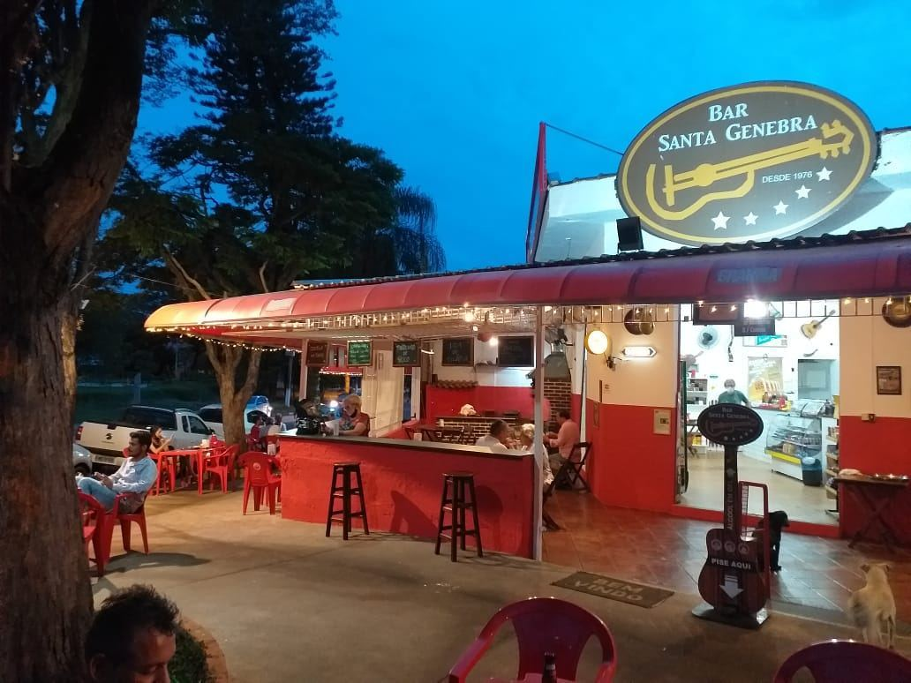
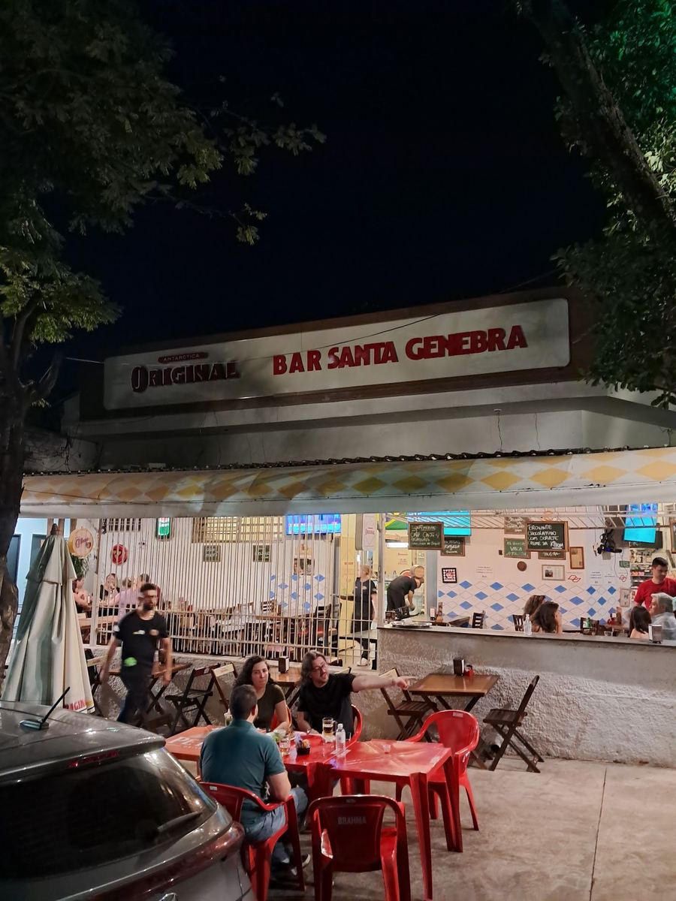
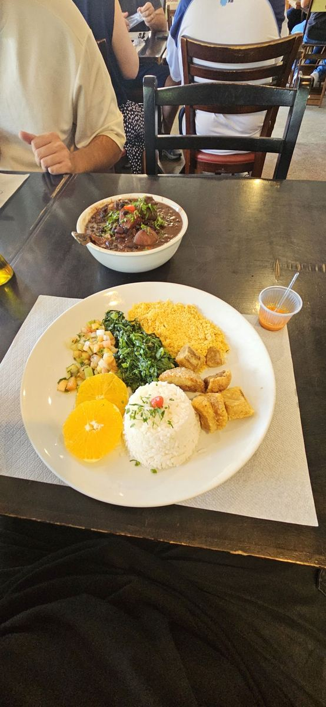
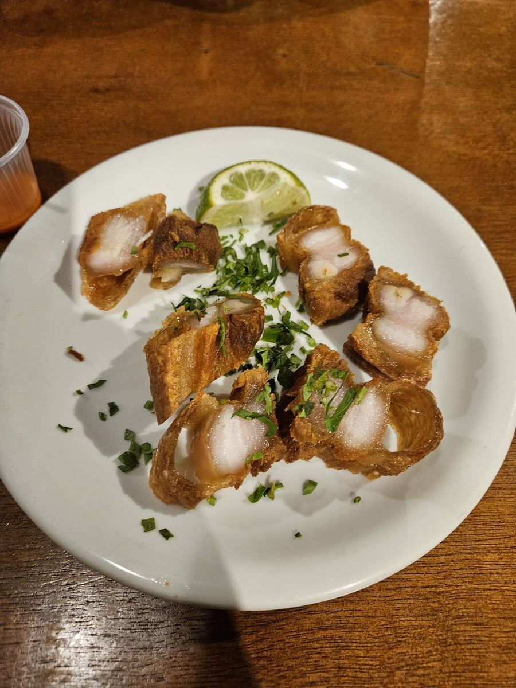
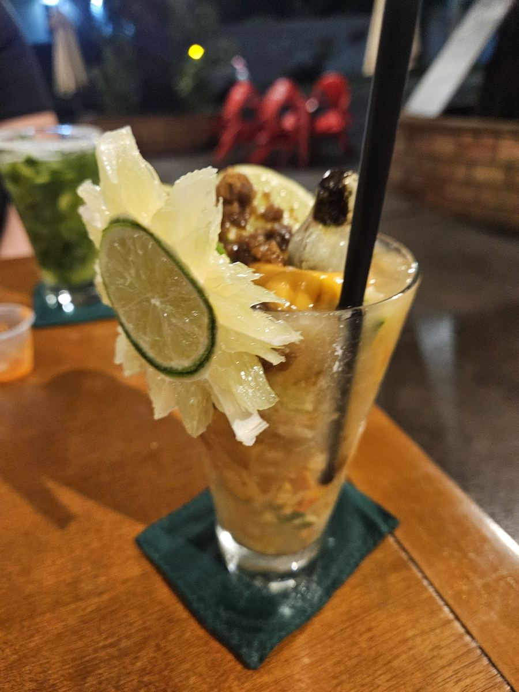
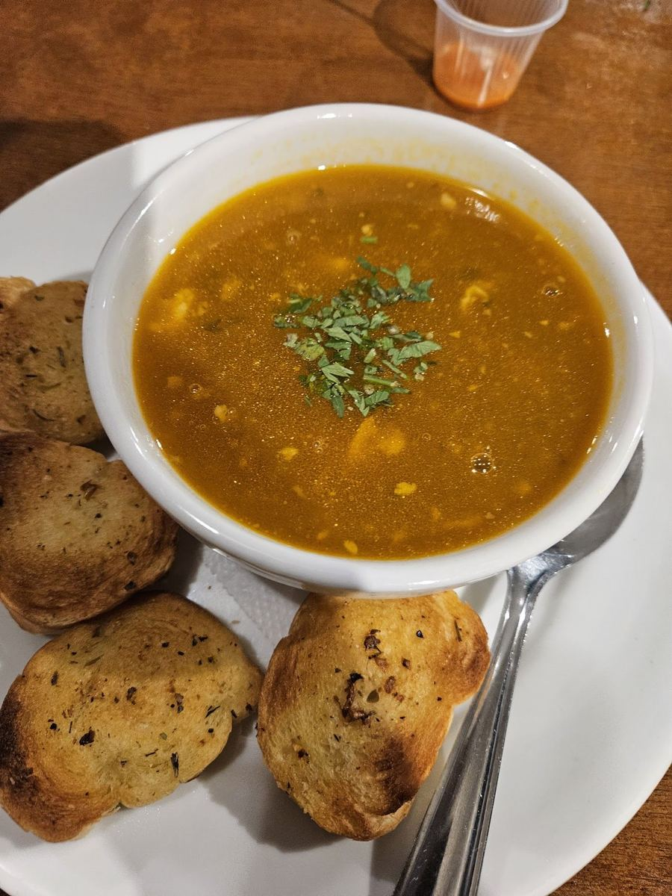
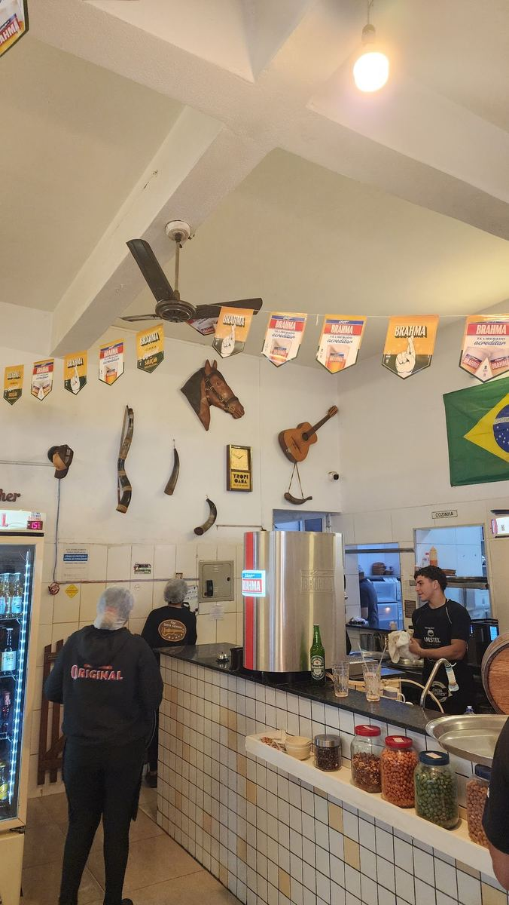
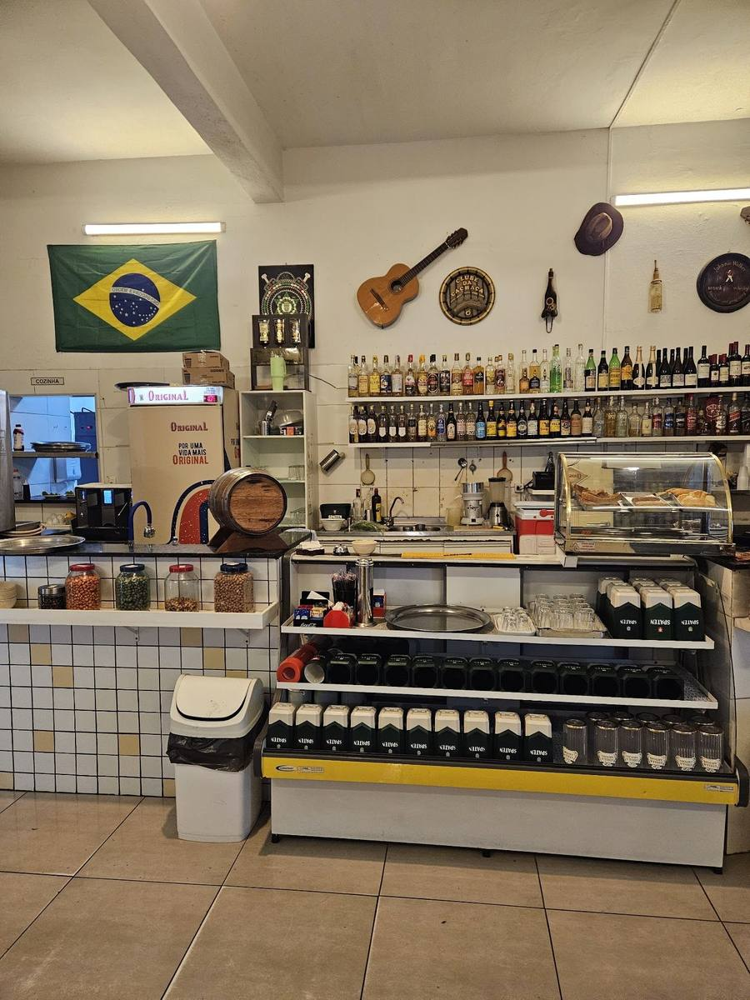

Feijoada, rabada e cerveja gelada do jeito de 1976.
Boteco raiz no Jardim Santa Genebra, com almoço caseiro todo dia, costela com mandioca, porções de boteco, cachaças e um happy hour de segunda a sexta. Tem varanda, estacionamento grátis e o pet pode vir junto.


do mesmo jeito.
O que o pessoal vem buscar
Comida de boteco feita com tempero de casa. O cardápio completo e o prato do dia ficam no balcão e no Instagram.
Pratos da casa
- Feijoada completaPara dividir, como a casa gosta
- RabadaUma das mais pedidas
- Costela com mandioca"De cortar com colher", diz quem provou
- Joelho de porcoPara a mesa toda
- PF com picanhaO tradicional prato feito
Pra beliscar
- Bolinho de bacalhau e croquete de costela
- Torresmo, porpeta e carne seca
- Caldo de mocotó com torradas
+ cachaças e caipirinhas da casa




Do café ao último copo
Abre cedo e fecha tarde, de segunda a sábado. No domingo vai até o fim da tarde.
8h às 22h · dom até 17hComida caseira com tempero elogiado, PF, feijoada e prato do dia.
10h às 21h30 · dom até 16h30Cardápio especial de petiscos e promoção de caipirinha, de segunda a sexta.
16h30 às 19h30

Bar e mercearia de bairro, há meio século
Balcão com prateleira de cachaça, bandeirinhas no teto e mesas na varanda. É o tipo de lugar onde dá para conversar sem gritar, levar a família e chegar com o cachorro.
- Estacionamento grátisVagas na frente e na rua
- Pet friendlyO cachorro é bem-vindo
- AniversáriosReserve a mesa pelo WhatsApp
- Todos são bem-vindosCasa que acolhe a comunidade LGBTQIA+
Quem senta, volta
O grande destaque foi o bolinho de bacalhau, tanto que acabamos pedindo outra porção. A caipirinha de caju com rapadura foi a melhor da noite.
Vini · Google
Ótimo lugar para uma comida caseira. O tempero da comida é, realmente, muito bom. O tempero da salada é incrível.
Italo · Google
Pensa num lugar completo: localização perfeita, comida deliciosa, bem frequentado e com um atendimento classe A.
Vander · Google
Em Barão Geraldo
| Segunda | 8h às 22h |
| Terça | 8h às 22h |
| Quarta | 8h às 22h |
| Quinta | 8h às 22h |
| Sexta | 8h às 22h |
| Sábado | 8h às 22h |
| Domingo | 8h às 17h |
Rua Angelo Vicentim, 736 · Jardim Santa Genebra, Campinas (SP)
WhatsApp (19) 99612-6459 · @santagenebrabar